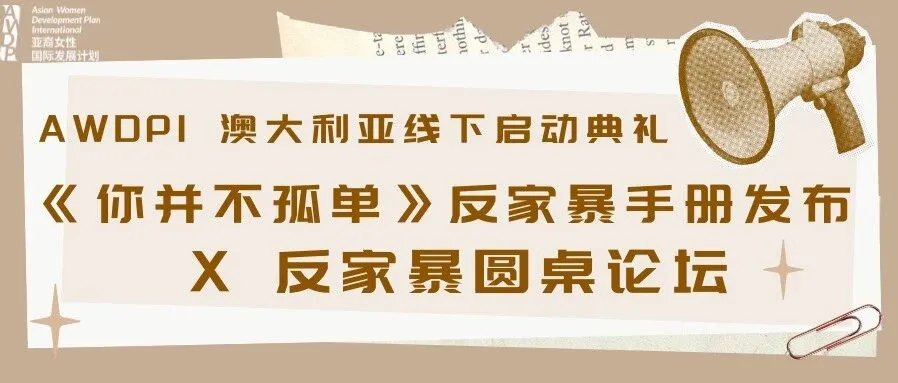
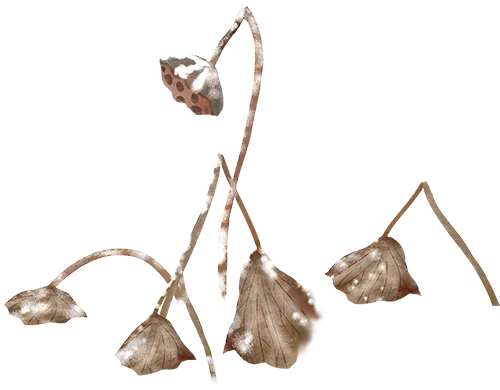
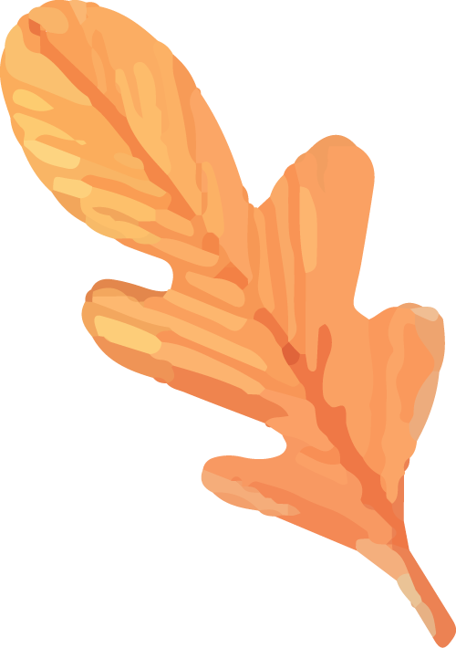
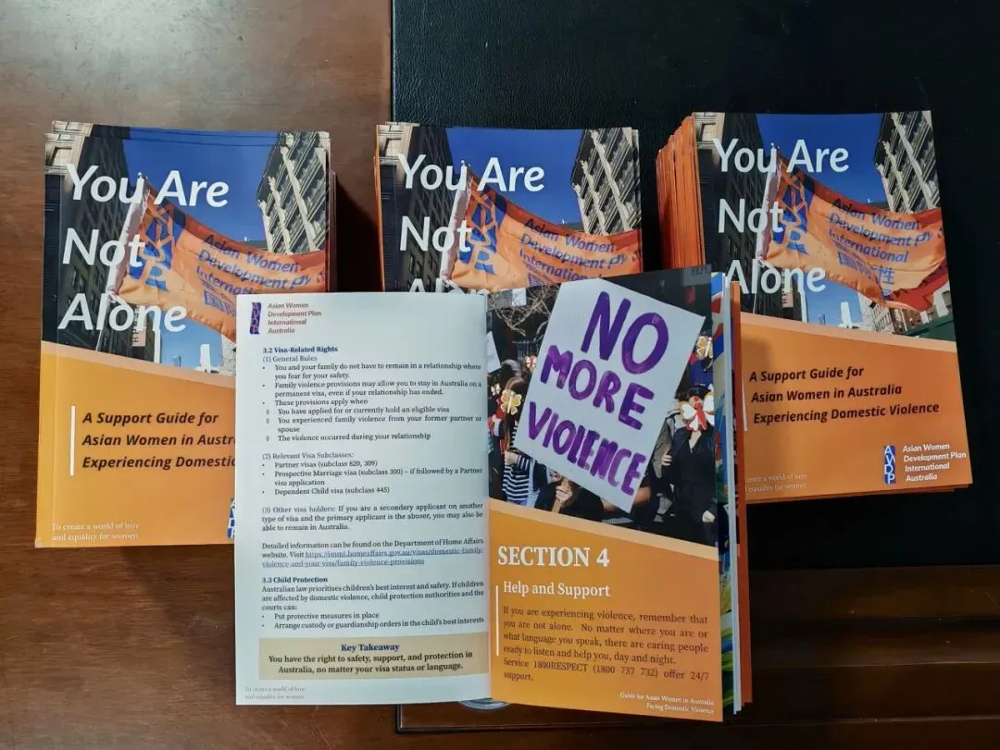
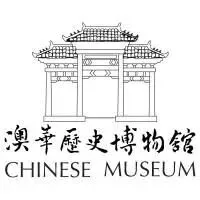
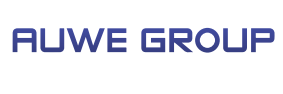
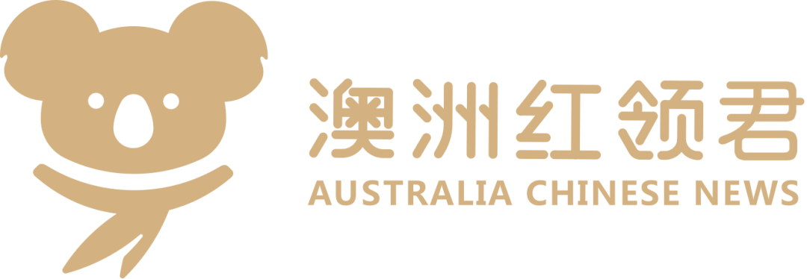
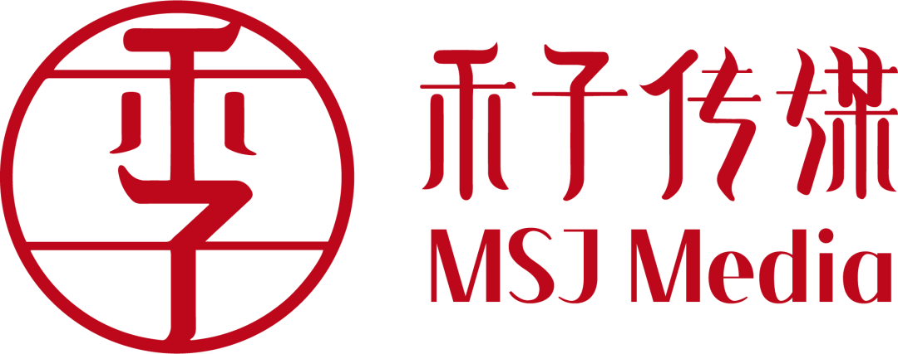
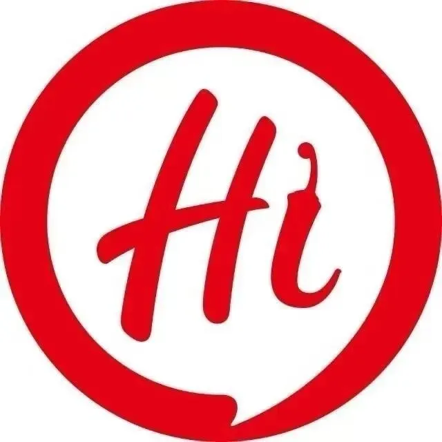
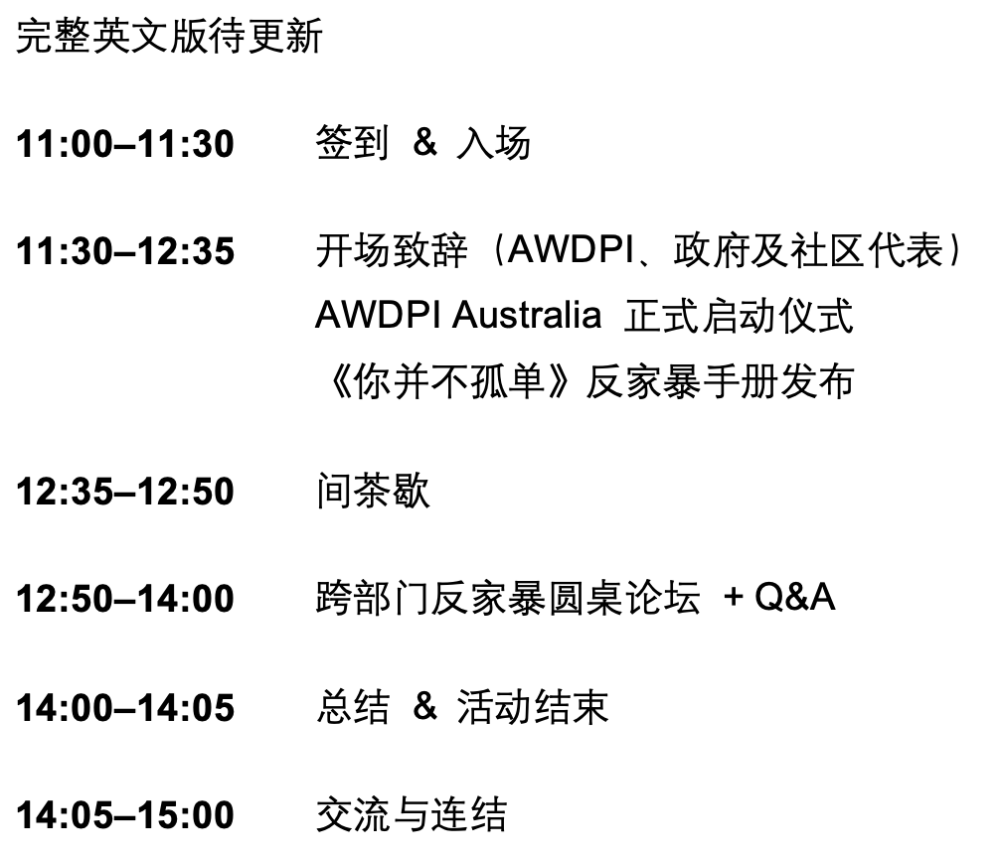

当暴力发生在亲密关系中，
沉默不是你的错。
当你身在海外，语言不通、文化不同，甚至不知道从哪里开始求助时——
请记住：
你很勇敢，你很坚强，你并不孤单 🧡

2025 年 11 月 29 日（星期六），AWDPI Australia（亚裔女性国际发展计划澳大利亚国家办公室）将在墨尔本举行首次公开亮相。活动主题为：“Protecting and Empowering Asian Women Against Violence” (保护与赋权：守护亚裔女性免受暴力)
通过这场跨部门共同参与的公开活动，
我们正式开启 AWDPI
在澳大利亚的第一步——
将国际经验带入本地环境，
让本地资源触达真正需要的人，
把多元文化社区紧密连接在一起，
共同为在澳的亚裔女性打造一个更安全、更有力量、更友好、更具文化敏感度的支持网络。
这是一场具有重要意义的里程碑活动。当天，我们将汇聚来自不同领域的声音——政府部门代表、执法机构与警官、家庭法律专业人士、心理健康与创伤支持专家、反家暴倡导者、公益专家，以及多元文化社区组织，我们将共同参与、共同发声，从政策、法律、执法、心理、文化等多个角度出发，讨论如何在澳大利亚更有效地支持正在经历、可能遭遇或希望提前保护自己的亚裔女性。

⎡AWDPI 澳大利亚国家办公室 (AWDPI Australia) 正式启动仪式⎦
本次活动标志着 AWDPI Australia 的正式亮相——
我们在澳的系统性工作，将从这里开始。
活动将由 多位重磅级嘉宾到场致辞与参与，将包括：
联邦与维州市议员
维州多元文化委员会委员
执法机构代表（警官）
家庭律师及法律专业人士
心理健康与创伤支持专家
多元文化社区领袖
嘉宾们将分享他们对 AWDPI Australia 的祝贺与期待，并表达在女性安全、政策协作、社区支持方面与我们携手合作的愿景。
多家澳洲媒体与社区合作伙伴也将全程参与、采访与报道，共同扩大本次活动的影响力。
⎡AWDPI Australia
官方发布反家暴手册⎦
本次活动将正式发布 AWDPI Australia 法律支持团队编写的反家暴实用手册《You Are Not Alone: A Support Guide for Asian Women in Australia Experiencing Domestic Violence》英文版（《你并不孤单：在澳亚裔女性反家暴实用手册》）
结合澳洲法律制度、跨文化特征与实际求助场景，手册内容涵盖家暴识别、各州法律、保护令申请、证据收集、紧急求助、签证与儿童保护、以及如何安全地帮助身边人等核心内容。
这本手册旨在为在澳亚裔女性提供清晰、实用、跨文化友好的安全指引。
现场参会者可免费领取纸质手册！

⎡跨部门反家暴圆桌论坛⎦
圆桌论坛将汇集警官、家庭法律师、多元文化社区领袖、以及NGO 组织代表，共同探讨“跨文化家暴”这一关键议题。
讨论将从在澳亚裔女性的真实处境出发，围绕以下三个核心主题展开：
跨文化语境中的误区与家暴法律定义
幸存者的保护政策与求助路径
社区支持与未来合作方向
论坛将从法律、执法、文化差异与社区实践等多角度切入，共同探索如何为在澳亚裔女性提供更安全、更可及、更具文化敏感度的支持。
⎡轻松温暖的社交氛围⎦
让资源真正流动起来！
在活动尾声，我们将准备轻食茶点，为所有参会者创造一个轻松、开放又充满机会的交流空间。
现场你可以：
与嘉宾和各行业领袖面对面交流
结识更多致力于亚裔女性安全与赋权的伙伴
分享经验、交换资源、寻找合作机会
加入跨文化、跨专业的支持网络
拓展公益与社区合作的长期可能性
这是一个难得的时刻——
让不同领域、不同背景、怀有同样使命的人
真正连结在一起，
为亚裔女性的安全与未来
搭建起更稳固、更有行动力的支持网络。
⎡活动时间⎦
2025 年 11 月 29 日（周六）
线下活动时间（墨尔本/悉尼）
🕒11:00 – 15:00
（座位有限，仅开放 30 个公众席位；需提前报名，活动现场将核对报名信息）
线上直播时间
🕒11:30 – 14:05（墨尔本/悉尼）
🕒09:30 – 11:05（北京时间）
⎡活动形式⎦
线下 + 线上同步
活动主要以英文进行，并提供中英双语实时字幕支持。
线下地点
🏛 Museum of Chinese Australian History 澳华历史博物馆
线上平台
💻 Zoom（报名成功后将收到参会链接）
📍 报名方式
扫描下方二维码
或点击文章结尾“阅读原文”跳转至 Eventbrite进行报名
（需提前注册，席位有限）
🤝如有任何疑问，请添加 AWDPI Australia 小助手，获取活动提醒、入群信息等

场地支持：Museum of Chinese Australian History 澳华历史博物馆

媒体支持：Aus Channel Media
AUWE Group

Australia Chinese News

MSJ Media

今日墨尔本
礼品支持：Haidilao Glen Waverley

附：活动日程（简版）墨尔本时间

撰稿｜王瑞祺 Ricky & Cindy Jiaze Gui
审核｜AWDPI澳大利亚国家办公室
排版&封面｜池一诺